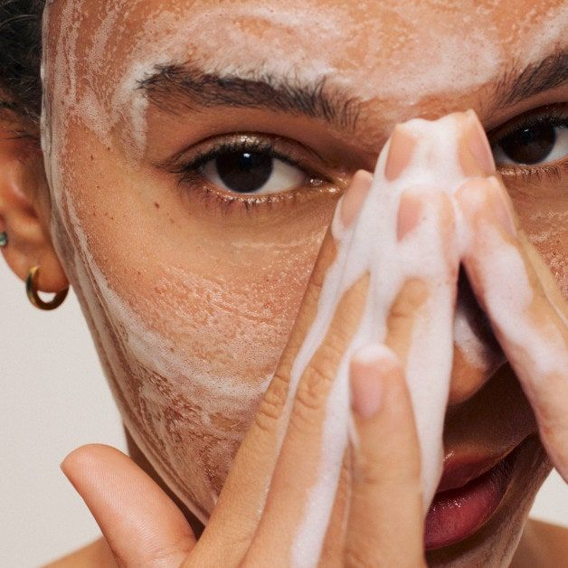
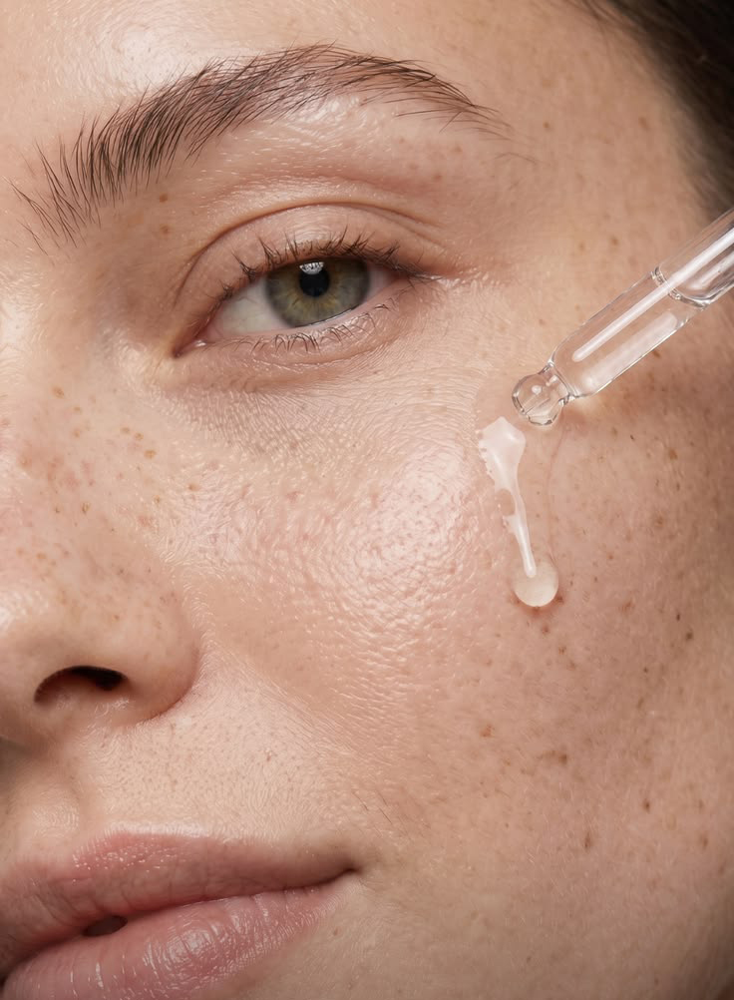

Abend-SkinCare
Montag
Gegen Mitesser & Pickel

- Reinigung
- BHA-Peeling (Junglück oder TO 2 %)
- Niacinamide
- Buffet + Copper Peptides
- Hyaluroncreme oder Squalane
Dienstag
Pflege/Erholung

- Reinigung
- Rosenwasser
- Hyaluronic Acid 2 % + B5
- Niacinamide
- Reichhaltige Creme
Mittwoch
Retinol
- Reinigung
- Retinol 0,2 % in Squalane
- Optional: Wenn die Haut trocken wirkt, danach Niacinamide dünn auftragen
- Creme
Donnerstag
Enzympeeling + Selbstbräuner
- Reinigung
- Enzympeeling (sanft, Haut glätten, abwaschen)
- Hyaluronics (HA oder Marine)
- Niacinamide
- Leichte Creme
- Selbstbräuner
Freitag
Pflege/Erholung
- Reinigung
- Rosenwasser
- Hyaluronics
- Niacinamide
- Reichhaltige Pflege (Creme oder Squalane)
Samstag
Repair oder 1× pro Monat starkes Peeling
- Reinigung
- Hyaluronics
- Niacinamide
- Buffet + Copper Peptides
- Creme
- Resveratrol + Ferulic
1× pro Monat, z. B. am ersten Samstag
- Reinigung
- AHA 30 % + BHA 2 % Peeling Solution (10 Minuten, danach abwaschen)
- Hyaluronics
- Niacinamide
- Reichhaltige Creme
Sonntag
Selfcare-Tag
- Reinigung
- Clarins Comfort Scrub oder Lancôme Rose Sugar Scrub
- Maske (Feuchtigkeit/Repair)
- Hyaluronic Acid + B5
- Niacinamide
- Squalane oder reichhaltige Creme
- Pycnogenol